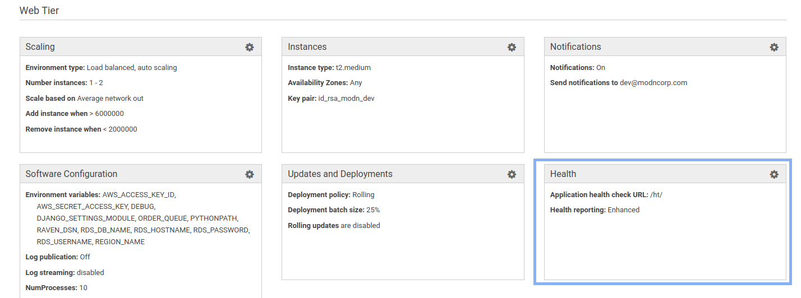
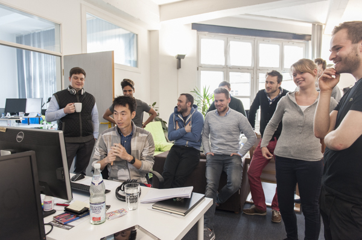
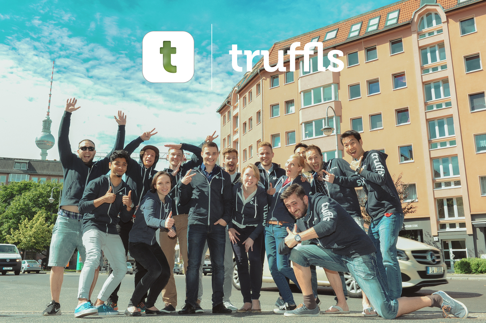
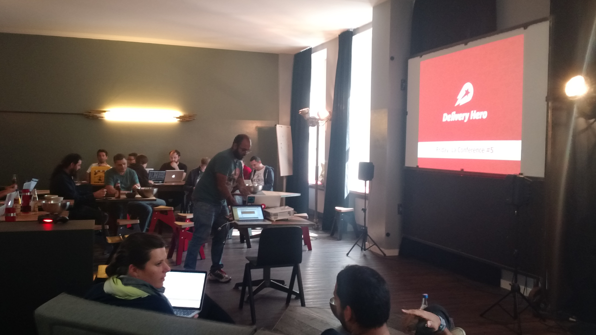

내마음의 구심점
가능하면 빨리 실패하라. 실수를 빨리파악하고 인정하는 것이 자신에게 유리하다
성공에 남다른 비결이 있는 게 아니라 모두 다 아는 지혜를 실천하기에 달린 것이다.
파도를 아닌 파도를 만드는 바람을 보는 세상의 눈이 필요하다.
문제를 쫓아 다니면 문제만 쫓아 다닌다. 근본적인 원인을 생각하라.
승리는 우리를 흥분시킨다. 하지만 1등을 하지 못했다고 부끄러워할 필요는 절대 …more ...
가능하면 빨리 실패하라. 실수를 빨리파악하고 인정하는 것이 자신에게 유리하다
성공에 남다른 비결이 있는 게 아니라 모두 다 아는 지혜를 실천하기에 달린 것이다.
파도를 아닌 파도를 만드는 바람을 보는 세상의 눈이 필요하다.
문제를 쫓아 다니면 문제만 쫓아 다닌다. 근본적인 원인을 생각하라.
승리는 우리를 흥분시킨다. 하지만 1등을 하지 못했다고 부끄러워할 필요는 절대 …more ...
EB에서는 Health check 하는 기능을 기본적으로 포함하고 있다. 이것을 위해서는 Django에서 health check 요청을 허락하는 설정이 필요하다. Route53에서 설정된 Domain으로 요청은 한다고 잘못생각해서 오랫동안 고민했다.

https://gist.github.com/dryan/8271687
try:
EC2_IP = requests.get('http://169.254.169.254/latest/meta-data/local-ipv4').text
ALLOWED_HOSTS.append(EC2_IP …Backend developer at Modn, 2017.07
Backend developer at Modernlab, 2017.04 ~ 2017.07
Backend developer at Truffls, 2016.03 ~ 2016.09 https://truffls.de/en/

Django admin에 신규 기능 추가후 소개, Truffls

직원 기념 사진, Truffls

Tech …
more ...AWS Config Rules, 서울 리전 출시! https://aws.amazon.com/ko/blogs/korea/category/aws-config
임기성 :: 2015 리인벤트 리캡 게이밍 https://www.slideshare.net/awskorea/20151118-reinvent-recap-for-gaming-3-security-on-aws-waf-aws-inspector-config-rules-gisung-lim
AWS Summit Seoul 2016 https://www.slideshare.net/awskorea/agile-security-operational-strategy-leveraging-advanced-security-services-of-aws-gisung-lim
postgres에 SELECT 문장을 요청할 경우 발생, 일반적인 요청은 문제가 없으나 order by 이후에 들어오는 컬럼이 한글값을 가진 경우가 문제.
정렬이 되는 듯하나 유심히 순서를 확인해보면 맞지가 않다. 그래서 구글링해보니 같은 문제를 겪은 사람들이 있었다. - postgresql 에서 한글 정렬 문제 해결하기 https://ansuchan.com/postgresql-korean-order/
다문다독다상량(多聞多讀多商量, 많이 듣고 많이 읽고 많이 생각하라) 다독다작다상량(多讀多作多商量, 많이 읽고 많이 쓰고 많이 생각하라)
매일 글을 쓴다. 하루를 보내며 재미있었던 일